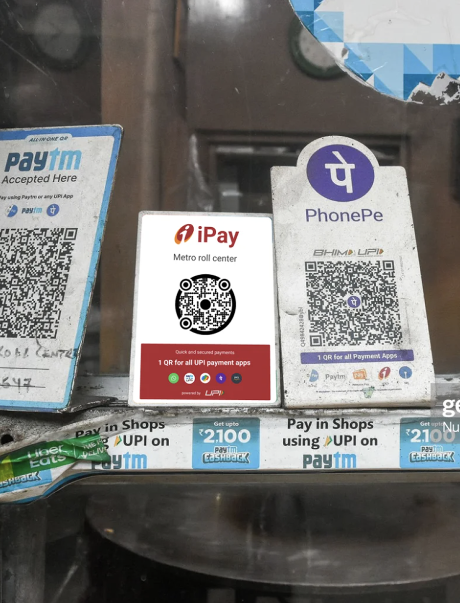
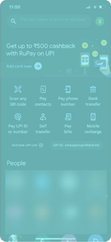
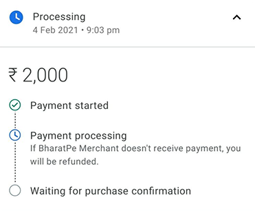
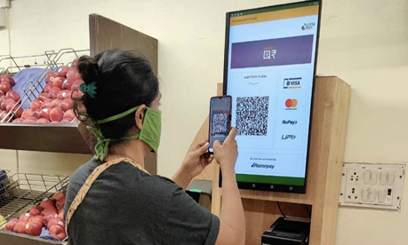
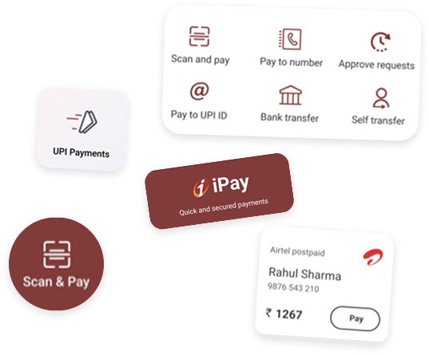

Case 03 · ICICI Bank · UX Research
A deep-dive UX research study into why users reached for GPay and PhonePe over their own bank’s UPI — and what it would take to win them back.

81%
on Google Pay, PhonePe and PayTM
71%
never paid by UPI from the bank app
“They can see my balance also, so I don’t open the app in public.”
User interviewMy impact
Understanding the brief
As of 2022, 81% of the UPI market had Google Pay, PhonePe and PayTM users.
71% of ICICI customers didn’t do UPI payments from the bank app, but used it for other tasks.
ICICI approached our team to find out why, and how to bring traction to their UPI.
So we conducted an in-depth research to solve this issue.
To curate a research handbook that addressed the following challenges:
How do you make ICICI UPI stand out without a first mover advantage?
How do we make ICICI UPI be so reliable that users deem it more reliable than their current UPI platforms?
How and what scenarios do we test to identify the correct problems and insights?
What design directions can ICICI take after this research?
The research was structured from a broad to a narrow spectrum using a funnel method. 24 users across 5 tier-1 cities in India were interviewed.
Funnel method research. Prototyped and tested 5 existing scenario based flows.
24 users, across 5 tier-1 cities in India.
Curated research insights, spotting patterns.
Designed a handbook and design directions for ICICI Bank.
We prototyped five real-world UPI tasks and watched users attempt each one in iMobile Pay, with no hints.
01/05: Scan & Pay at Subway
Challenge 1
No first-mover advantage
We had to address the “hard truth” that ICICI bank has no first-mover advantage against its competitors. So, to stand out as a UPI platform, they would have to innovate on the branding, marketing and offers cohorts.

Challenge 2
Security concerns
The environment impacts the user’s decision to open the right app.
Users resort to Gpay / Phonepe / PayTM for small payments because:


“They can see my balance also, so I dont open the app in public.”
“I wont open my banking app around many people they will see my password and snatch my phone.”
Challenge 3
Labels
Users take more time to complete UPI payments on the app due to confusing labels.

Low hanging fruit
Discoverability, Look & Feel, Labels and Form Design are the four ICICI could move on immediately.
Note: The full handbook goes much deeper, this case study highlights only the most striking findings from it.
We suggested 3 different ways to highlight ICICI UPI to the user based on the amount of disruption.
Impact
24 interviews conducted across 5 cities to map real UPI trust gaps and usage drivers.
Four days from research handover to live product changes.
ICICI came back to the agency with 3 more projects after ours.